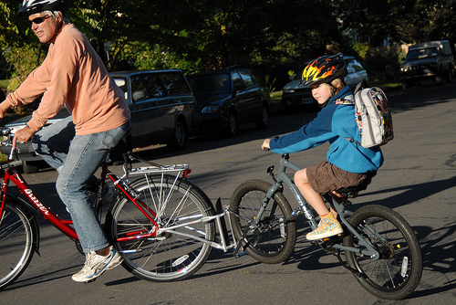

E o que é o FollowMe?“, perguntam vocês. Pois bem, o FM é um kit que permite acoplar uma bicicleta de criança a uma de adulto, tornando o conjunto num tandem “pai & filho”.
 É um acessório que pode ser usado com todo o tipo de bicicletas de roda 26″ ou 28″ para atrelar bicicletas de roda 12″ a 20″ e, logo, pode acompanhar o crescimento da criança, ou ser usado com diferentes bicicletas (dos vários filhos, dos sobrinhos, etc).
É um acessório que pode ser usado com todo o tipo de bicicletas de roda 26″ ou 28″ para atrelar bicicletas de roda 12″ a 20″ e, logo, pode acompanhar o crescimento da criança, ou ser usado com diferentes bicicletas (dos vários filhos, dos sobrinhos, etc).
O FollowMe dá jeito para usar nos passeios em família, pois permite expandir o alcance dos passeios uma vez que quando a criança começa a ficar cansada pode atrelar-se a sua bicicleta à do pai ou da mãe, por exemplo, e ser assim facilmente rebocada pela distância e durante o tempo necessários, sem ter que pedalar.

Este kit dá jeito também para transportar a criança e a sua bicicleta entre casa e o local do passeio, o parque, etc, permitindo abdicar do automóvel sem ter que pôr a criança a pedalar “solta” na sua bicicleta na estrada, mesmo que acompanhada pela família, nomeadamente em troços mais complicados em termos de velocidade e volume de tráfego motorizado.

Foto: BikePortland.org
Assim, o FollowMe pode ser a solução ideal para quem se desloca regularmente de bicicleta no dia-a-dia (ou gostaria de fazê-lo) e precisa de deixar os filhos na creche ou na escola. Este kit não interfere com o suporte traseiro de bagagem nem com o espigão do selim, pelo que é compatível com cadeirinhas de transporte de crianças e com alforges.

Isto permite que um adulto leve a sua bagagem normalmente em alforges e/ou uma criança mais pequena na cadeirinha e ainda reboque outra bicicleta com uma criança mais velha durante o trajecto casa-escola, por inteiro ou apenas nos mais complicados, sendo que nos restantes a criança pode seguir separadamente a pedalar na sua própria bicicleta.

Chegado à escola da criança é só desengatar a bicicleta desta (guardá-la no parque da escola), rebater o kit e seguir viagem. 
Produto do site página do produto no nosso site.


")


{kind=link}
{kind=link}
{kind=link}
{kind=link}
{kind=link}
{kind=link}
{kind=link}